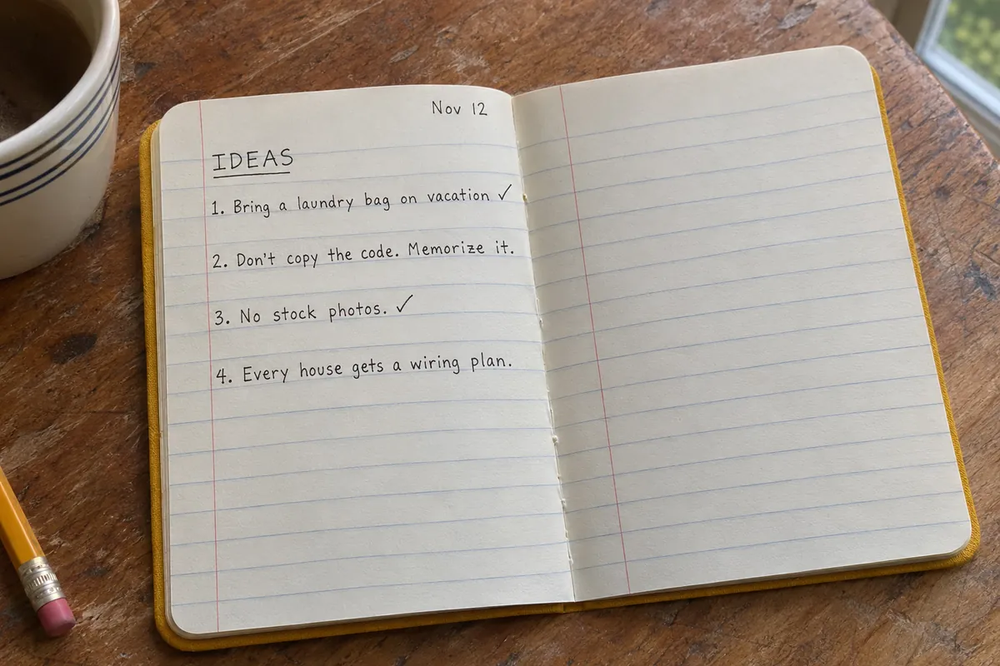
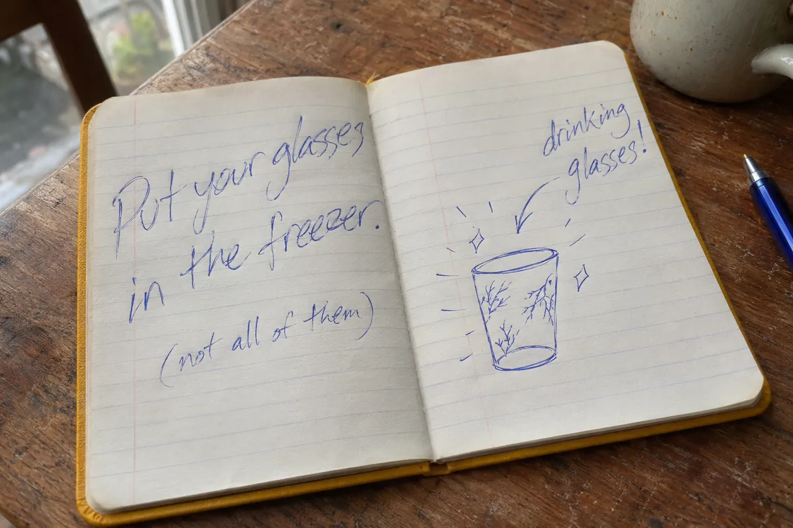
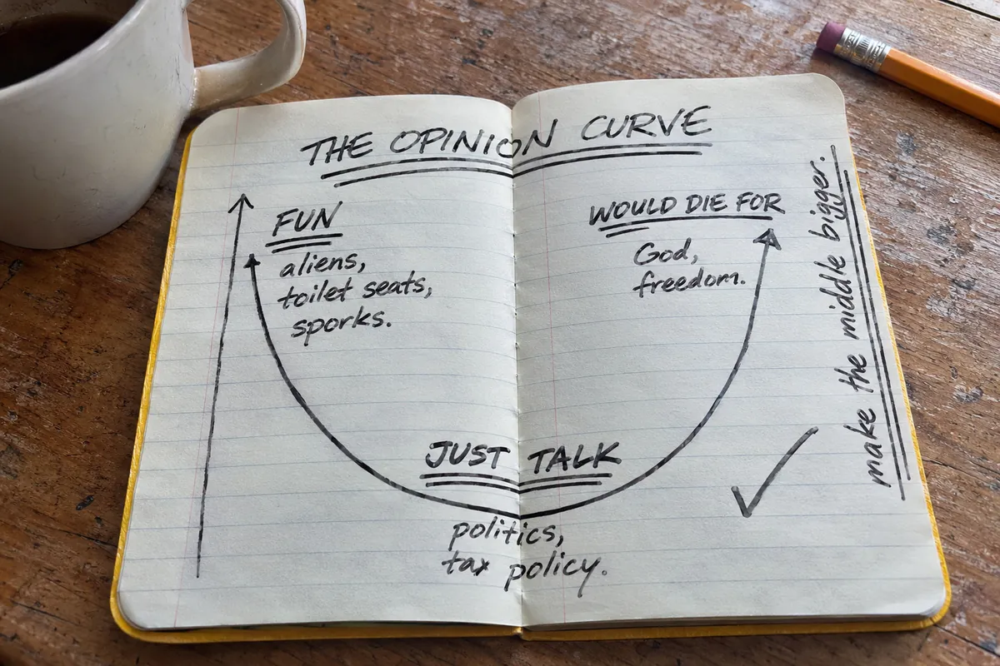

About
Tim gave some friends little yellow notebooks and asked them to write down their ideas. One of those ideas was a sewing club. Another was this podcast.
We said that's a good idea. They believed us and now it exists. And so we like that. We like community builders.
Tim, on the sewing club, episode 1, 1:09:59
The friends with notebooks are the Yellow Notebook Club. The podcast is where three of them say their ideas out loud, good or bad, then poke holes in them. In Andrew’s words: “we are all about ideas. We’re all about good ideas, bad ideas, any kind of ideas.” (episode 1, 0:02:27)
Every episode opens with a sponsor that isn’t a sponsor (water, cars, maple), then the same jumble of voices: “What is an idea? Chaos.” “It is crunchy and marshmallowy.” After that, someone says “I have an idea,” and it goes from there. The feed says they Recorded in Pierce County, Washington.rsquo;re in Pierce County, Washington.
The hosts
As described by themselves and each other, on the show. The notebook photos are stand-ins: a computer made them and guessed everyone’s handwriting. Andrew probably does write that neatly.
Andrew Peterson

- Runs it: does the welcome, keeps it moving. “Who’s got our first big idea of the day?” (ep. 1)
- Would like you to stop using stock photos. “They add no value.” (ep. 1, 0:32:38)
- Thinks watermelons “are not that good anyway” and strawberries are “the most overrated fruit.” (ep. 1)
- Has a breaker box that was “put in in 1957”, and an idea about that. (ep. 1)
Tim Van Strien

- Handed out the notebooks. “Before this, I never wrote down my… I don’t think I had any ideas before this.” (ep. 1, 0:38:19)
- Introduced as “a breath of fresh mozzarella in this dog eat cheese world” (ep. 2) and “the hoorah from Wichita” (ep. 28). Born in Wichita.
- Owns no mugs. “We are jar family.” (ep. 1)
- Has a printer history, possibly. Episode 2 is named after the search for it.
Isaac McPhee
- Reads the sponsor ads. None of the sponsors know.
- “Author of equal or less than 100 books” (ep. 2), including a joke book and a physics book.
- Drew the opinion curve, below. Is “accused regularly” of being opinionated. Fork person. Doesn’t like vegetables. (ep. 1)
- Introduced as “Alaska from Nebraska”. Has, in fact, been to Nebraska once. (ep. 28)
Guests so far
The opinion curve
Isaac’s chart from episode 1. Tim, at 0:28:09: “We’ll probably put this drawing on the website.” Here it is, redrawn from the description by a computer pretending to be Isaac.

In words: on the left, things that are fun to fight about (aliens, toilet seats, sporks, the ending of Lost). On the right, things worth dying for (God, freedom, human rights). At the bottom, things to just talk about, like politics and tax policy.
Isaac’s takeaway at 0:26:58: he needs to make the middle bigger.
Things they said they’d do
- A website that, by the time you hear this, “will be ready to go and it will be extremely robust” (ep. 1). In progress.
- A catalogue of every idea (ep. 1 and 2). Started: ideas.
- The opinion curve on the website (ep. 1). Above.
- Money, starting June 1 (ep. 1). June 1 has been and gone.
- A Patreon whose top reward is Tim describing a sticker for twenty minutes (ep. 1). Does not exist.
- Episode 281 (ep. 2). 253 to go.